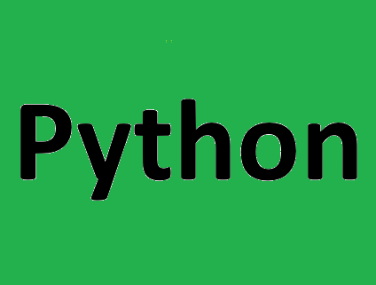

Курс Python-разработчик с нуля
Мы поможем вам с нуля за 10 месяцев разобраться в основах и разработке на Python. Вы напишете свои первые программы, а личный наставник будет вашим проводником к первому офферу.
Записаться
Программа курса
- Введение в Python и основы программирования. Часть 1
- Введение в Python и основы программирования. Часть 2
- Основы ООП в Python
- Алгоритмы структуры данных
- Асинхронное программирование на Python
- Разработка веб-прриложений на FastAPI
- Тестирование и лучшие практики разработки
- Контейнеризация с Docker и деплой
- Работа с Git
- CI/CD: основы интеграции и деплоя
- Работа с микросервисами